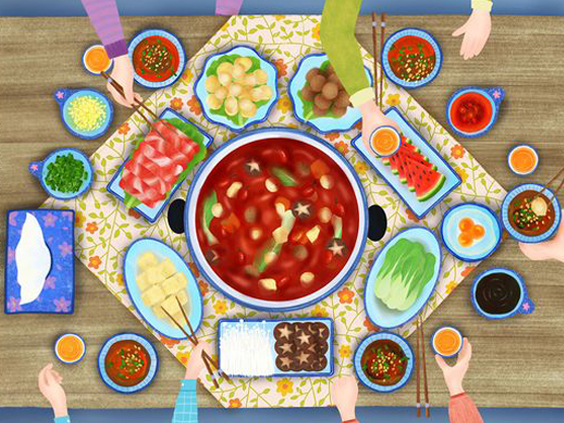

Hot pot is a flavorful broth traditionally served inside a large metal pot. The broth is brought to a boil and left simmering for the duration of the meal. Raw ingredients, such as meat and vegetables, are placed into the simmering broth and thus "cooked". The cooked pieces are dipped into dipping sauces for additional flavor. Hot pot is considered a main course and is usually served without rice or noodles on the side. Hot pots can be prepared and eaten at home or in a restaurant.
Typical hot pot ingredients include thinly sliced meat, leaf vegetables, mushrooms, vermicelli, sliced potatoes, bean products, egg dumplings, tofu, and seafood. Raw ingredients are pre-sliced into thin sections that will cook quickly and consistently in the simmering broth, which is maintained at a gentle boiling temperature. Most raw foods can be cooked in a hot pot, although they may have different cooking times, and must be immersed in the soup and then removed accordingly.
The tripods of Zhou dynasty may be the earliest prototypes of the hot pot. Diners among the nobility each had a personal pot made of bronze, and called ran lu (燃炉). The main part of ran lu was a small stove with a small pot above burning charcoal. Later, a hot pot made with copper was created during the "Three Kingdoms period" (200–280 AD), which is generally acknowledged as the origin of the hot pot.
During the Qing dynasty, hot pot became popular among the emperors. In particular, the Qianlong Emperor was very fond of hot pot and would eat it for almost every meal. Later, the Jiaqing Emperor also had a banquet with 1,550 hot pots at his coronation. Empress Dowager Cixi was also known to have enjoyed hot pot, especially in the winter months.